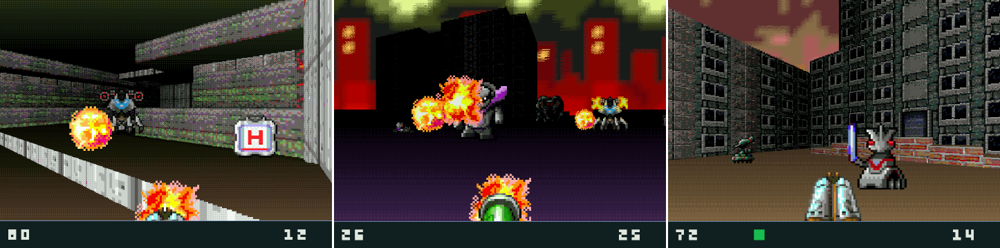

This isn't a 90s style retro shooter, this is a 90s shooter.
This game runs everywhere and adheres to great simplicity. It is much more efficient and portable than Doom. It has completely no dependencies and doesn't even use floating point in case your computer doesn't have the HW unit. It can fit into 200 KB (including assets!) and runs with just 32 KB RAM. No build system, library, internet connection or package manager is inherently required for compilation as the whole game is wriiten in pure C language.
This game is not just a mere entertainment, it is an art that categorically rejects capitalist technology.
MORE THAN A GAMEThis is not a mere entertainment tool meant for killing time or pursuing low goals such as making profit, this is an art, a tool, a blueprint, a manifesto. Anarch is completely gratis and free as in freedom and besides entertainment can also be used for hacking, education, research, media creation, as a benchmark, as a test, as an environment, as an engine, as a basis for something greater. You are not limited by anything. Nothing is hidden, everything is allowed, no burdens are imposed.
 NO ONE OWNS THISNot even I, the creator, own any part of this game. I have purposefully created everything myself from scratch, including the engine, graphics, sounds, music, even the font and palette, so that I could eventually give up all my rights and dedicate this game fully and completely to the public domain, to you, my dear fellow human being. No one shoud be allowed to own information and art.
I've done my best to ensure this is 100% free as in freedom software and culture, well understandable and documented. This isn't made for any profit. This is made out of love, for you and for the greater good.